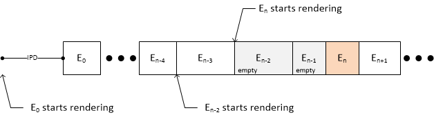

This specification specifies an Hypothetical Render Model (HRM) that constrains the complexity of documents that conform to
any of the TTML Profiles for Internet Media Subtitles and Captions ([[IMSC]]).
The model is not intended as a specification of the processing requirements for implementations. For instance, while the
model defines a glyph buffer for the purpose of limiting the number of glyphs displayed at any given point in time, it neither
requires the implementation of such a buffer, nor models the sub-pixel character positioning and anti-aliased glyph rendering
that can be used to produce text output.
Scope
This specification specifies an Hypothetical Render Model (HRM) that constrains the complexity of a IMSC Document
Instance.
Documentation Conventions
This specification uses the same conventions as [[!IMSC]].
Terms and Definitions
IMSC Document Instance. A Document Instance that conforms to any profile defined in any edition of
[[!IMSC]].
The model specifies a (hypothetical) time required for completely painting an Intermediate Synchronic Document as
a proxy for complexity. Painting includes drawing region backgrounds, rendering and copying glyphs, and decoding and copying
images. Complexity is then limited by requiring that painting of Intermediate Synchronic Document En
completes before the end of Intermediate Synchronic Document En-1.
Whenever applicable, constraints are specified relative to Root
Container Region dimensions, allowing subtitle sequences to be authored independently of
Related Video Object
resolution.
To enable scenarios where the same glyphs are used in multiple successive Intermediate Synchronic Documents, e.g. to convey a CEA-608/708-style roll-up (see
[[CEA-608]] and [[CEA-708]]), the Glyph Buffers Gn and Gn-1 store rendered glyphs across Intermediate Synchronic Documents, allowing glyphs to be copied into the Presentation
Buffer instead of rendered, a more costly operation.
Similarly, Decoded Image Buffers Dn and Dn-1 store decoded images across Intermediate Synchronic Documents, allowing images to be copied into the Presentation
Buffer instead of decoded.
General
The Presentation Compositor SHALL render in Presentation Buffer Pn each successive Intermediate Synchronic
Document En using the following steps in order:
paint, according to stacking order, all background pixels for each region;
paint all pixels for background colors associated with text or image subtitle content; and
paint the text or image subtitle content.
The Presentation Compositor SHALL start rendering En:
at the presentation time of Em, where Em is the closest ISD for which 0<m<n and Em-1
is not an empty ISD, if the presentation time of En minus that of Em is less than IPD; or
at the presentation time of En minus IPD, otherwise.
The Presentation Compositor never renders an ISD more than IPD ahead of its presentation time and treats sequences of
empty ISDs as a single ISD.

illustrates the rendering and presentation of Intermediate Synchronic Documents by the Presentation Compositor. The
Presentation Compositor renders En at the presentation time of En-2 since En-1 is an
empty ISD. In contrast, the Presentation Compositor renders En-2 at the presentation time of
En-3 since En-4 is not an empty ISD. Finally, E0 is rendered at the presentation
time of E0 minus IPD.
BDraw is the normalized background drawing performance factor;
DURT(En) is the duration, in seconds, for painting the text subtitle content for Intermediate
Synchronic Document En, as specified in Section ; and
DURI(En) is the duration, in seconds, for painting the image subtitle content for Intermediate
Synchronic Document En, as specified in Section .
The contents of the Presentation Buffer Pn SHALL be transferred instantaneously to Presentation Buffer
Pn-1 at the presentation time of Intermediate Synchronic Document En, making the latter
available for display.
It is possible for the contents of Presentation Buffer Pn-1 to never be displayed. This can happen
if Presentation Buffer Pn is copied twice to Presentation Buffer Pn-1 between two consecutive video
frame boundaries of the Related Video Object.
It SHALL be an error for the Presentation Compositor to fail to complete painting pixels for En before the
presentation time of En.
Unless specified otherwise, the following table SHALL specify values for IPD and BDraw.
BDraw effectively sets a limit on fillings regions - for example, assuming that the Root Container
Region is ultimately rendered at 1920×1080 resolution, a BDraw of 12 s-1 would correspond to a fill rate of
1920×1080×12/s=23.7×220pixels s-1.
NBG(Ri) SHALL be the total number of elements within the tree rooted at region Ri that satisfy the following criteria:
the element is either a region, body, div, p or
span; and
the opacity of the computed value of tts:backgroundColor is not 0.
An element and its parent that satisfy the criteria above and share identical computed values of
tts:backgroundColor are counted as two distinct elements for the purpose of computing NBG(Ri).
The set element is not included in the computation of NBG(Ri). While it can affect the
computed values of tts:backgroundColor, it is removed during Intermediate Synchronic Document
construction.
For each presented image, the Presentation Compositor SHALL either:
if an identical image is present in Decoded Image Buffer Dn, copy the image from Decoded Image Buffer
Dn to the Presentation Buffer Pn using the Image Copier; or
if an identical image is present in Decoded Image Buffer Dn-1, i.e. an identical image was present in
Intermediate Synchronic Document En-1, copy using the Image Copier the image from Decoded Image Buffer
Dn-1 to both the Decoded Image Buffer Dn and the Presentation Buffer Pn; or
otherwise, decode the image using the Image Decoder the image into the Presentation Buffer Pn and Decoded
Image Buffer Dn.
Two images SHALL be identical if and only if they reference the same encoded image source.
The duration DURI(En) for painting images of an Intermediate Synchronic Document
En in the Presentation Buffer SHALL be as follows:
DURI(En) = ∑Ii ∈ Ic NRGA(Ii) / ICpy
+ ∑Ij ∈ Id NSIZ(Ij) / IDec
NSIZ(Ii) SHALL be the number of pixels of presented image Ii.
The contents of the Decoded Image Buffer Dn SHALL be transferred instantaneously to Decoded Image Buffer
Dn-1 at the presentation time of Intermediate Synchronic Document En.
The total size occupied by images stored in Decoded Image Buffers Dn or Dn-1 SHALL be the sum of
their Normalized Image Area.
The size of Decoded Image Buffers Dn or Dn-1 SHALL be the Normalized Decoded Image Buffer Size
(NDIBS).
Unless specified otherwise, the following table SHALL specify ICpy, IDec, and NDBIS.
Parameter
Initial value
Normalized image copy performance factor (ICpy)
6
Image Decoding rate (IDec)
1 × 220 pixels s-1
Normalized Decoded Image Buffer Size (NDIBS)
0.9885
Paint Text
In the context of this section, a glyph is a tuple consisting of (i) one character and (ii) the computed values
of the following style properties:
tts:color
tts:fontFamily
tts:fontSize
tts:fontStyle
tts:fontWeight
tts:textDecoration
tts:textOutline
tts:textShadow
In the case where a property is prohibited in a profile of [[IMSC]], the computed value of the property
specified in [[ttml2]] can be used.
While one-to-one mapping between characters and typographical glyphs is generally the rule in some scripts,
e.g. latin script, it is the exception in others. For instance, in arabic script, a character can yield multiple glyphs
depending on its position in a word. The Hypothetical Render Model always assumes a one-to-one mapping, but reduces the
performance of the glyph buffer for scripts where one-to-one mapping is not the general rule (see GCpy below).
if an identical glyph is present in Glyph Buffer Gn, copy the glyph from Glyph Buffer
Gn to the Presentation Buffer Pn using the Glyph Copier; or
if an identical glyph is present in Glyph Buffer Gn-1, i.e. an identical glyph was present in
Intermediate Synchronic Document En-1, copy using the Glyph Copier the glyph from Glyph Buffer
Gn-1 to both the Glyph Buffer Gn and the Presentation Buffer Pn; or
otherwise render using the Glyph Renderer the glyph into the Presentation Buffer Pn and Glyph Buffer
Gn.
Example of Presentation Compositor Behavior for Text Rendering
The duration DURT(En) for rendering the text of an Intermediate Synchronic Document
En in the Presentation Buffer is as follows:
NRGA(Gi) does not take into account decorations (e.g. underline), effects (e.g. outline) or actual
typographical glyph aspect ratio. An implementation can determine an actual buffer size needs based on worst-case glyph size
complexity.
The contents of the Glyph Buffer Gn SHALL be copied instantaneously to Glyph Buffer Gn-1 at the
presentation time of Intermediate Synchronic Document En.
It SHALL be an error for the sum of NRGA(gi) over all glyphs Glyph Buffer Gn
to be larger than the Normalized Glyph Buffer Size (NGBS).
Unless specified otherwise, the following table specifies values of GCpy, Ren and NGBS.
Normalized glyph copy performance factor (GCpy)
Script property (see Standard Annex #24 at [[!UNICODE]]) for the character of
gi
GCpy
latin, greek, cyrillic, hebrew or base
12
any other value
3
Text rendering performance factor Ren(Gi)
Block property (see [[!UNICODE]]) for the character of gi
Ren(Gi)
CJK Unified Ideograph
0.6
any other value
1.2
Normalized Glyph Buffer Size (NGBS)
1
The choice of font by the presentation processor can increase rendering complexity. For instance, a cursive
font can generally result in a given character yielding different typographical glyphs depending on context, even if latin
script is used.
Accessibility Considerations
In a system where IMSC Document Instances are expected to conform to the Hypothetical Render Model, an IMSC
Document Instance that does not conform to the Hypothetical Render Model might negatively impact accessibility
during presentation of the IMSC Document Instance and its associated content.
Privacy and Security Considerations
General
This specification has no inherent security or privacy implications.
The algorithm defined within this specification is used for static analysis of a resource.
This specification does not define any protocol or interface for obtaining such a resource,
and it does not define any interface for exposing the results of the analysis.
No personal or sensitive information is processed as part of the algorithm,
other than any such information that might happen to be part of the IMSC Document Instance being analysed.
No information is exposed by the algorithm to any origin.
No scripts are loaded or processed as part of the algorithm
and no links to external resources are dereferenced.
Implementation considerations
Implementers of this specification should capture and meet privacy and security requirements for their intended application.
For example, an implementation could, when reporting on an error encountered during processing of an IMSC Document Instance,
include a section of the content of an IMSC Document Instance to elaborate the error.
If that content could include sensitive or personal information,
the implementation should ensure that any such output is provided using appropriately secure protocols.
No such reporting is defined or required by this specification.